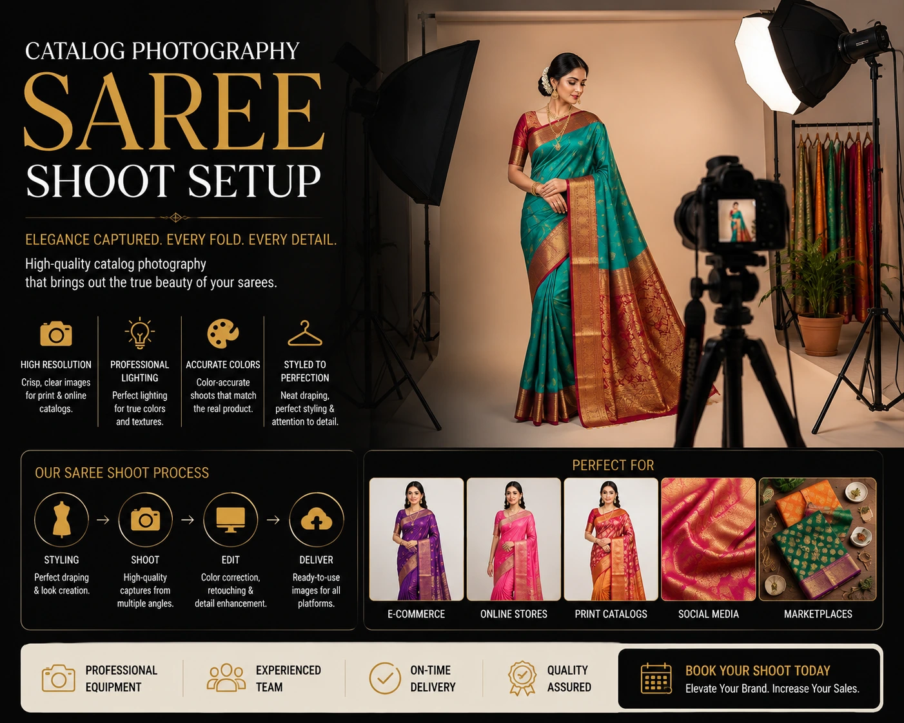
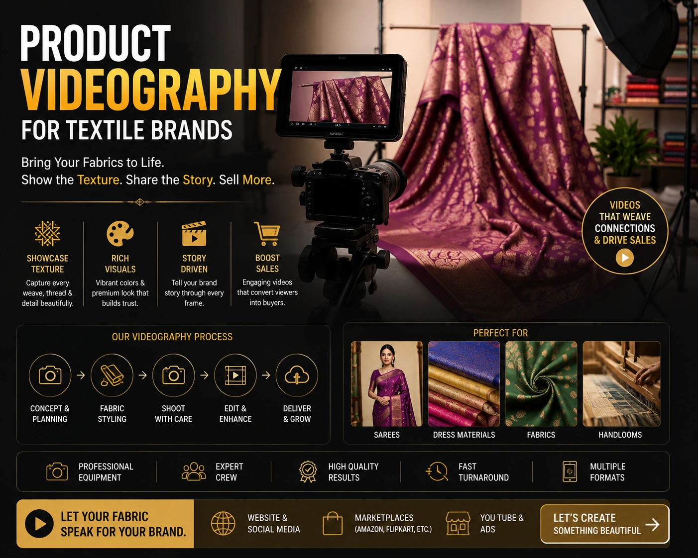

How E-commerce Product Photography is Boosting Local Sales for Madurai Businesses
Madurai's E-commerce Opportunity — and the Visual Gap Holding It Back
Madurai has always been a commercial city. From the wholesale textile markets of Nethaji Road to the silk weavers of Pathamadai, the handloom clusters of the surrounding districts to the jewellery traders of the temple town, Madurai's businesses have centuries of commercial heritage. What they have not always had is a visual production infrastructure capable of taking that heritage to a national and global online audience.
E-commerce product photography Madurai is the bridge between what Madurai businesses produce — some of the finest textiles, jewellery, and traditional goods in India — and what online buyers on Amazon, Flipkart, and Shopify see when they are making a purchase decision. The quality of that visual bridge determines whether a buyer clicks, trusts, and converts — or scrolls past to a competitor with better images.
Why Visual Quality Is Now a Competitive Requirement
When a buyer searches for a Kanjivaram saree, a brass pooja item, or a handmade leather product on Amazon or Flipkart, they see dozens of listings simultaneously. The thumbnail image is the first — and often the only — factor that determines which listing receives the click. A professionally shot, correctly lit, platform-compliant thumbnail from a Madurai business will consistently outperform a smartphone-photographed equivalent from the same city, even when the product quality is identical.
Website visual production Madurai is not a luxury for large exporters. It is a competitive requirement for every Madurai business selling online — because every competitor on the platform is a potential buyer's alternative, and visual quality is the first filter applied before price, reviews, or product description are ever read.
Win the Thumbnail Click
On Amazon and Flipkart, the main listing thumbnail determines which products receive the click. Platform-compliant, professionally lit product images consistently outperform smartphone photography in click-through rate.
Communicate Product Quality
For Madurai textiles, jewellery, and handcrafted goods, professional photography communicates the craftsmanship and material quality that justifies the price — something that low-quality images actively undermine.
Reduce Returns
Accurate, high-quality images set correct visual expectations before purchase. Buyers who receive what they expected from the images return products less — protecting margin and seller ratings.
Build Brand Trust for Direct Sales
Website visual production Madurai that is consistent and professional builds the brand trust that drives repeat purchases, word-of-mouth referrals, and direct website traffic over time.

Textile and Saree Photoshoot Madurai: The Specialist Requirement
Of all the product categories in Madurai's commercial landscape, textiles and sarees have the most demanding photography requirements — and the highest stakes for getting it wrong. A textile and saree photoshoot Madurai is not standard white background product photography. It requires specialist knowledge across lighting, styling, and post-production that non-specialist photographers consistently fail to deliver.
The specific challenges of textile and saree photography:
- Silk sheen and overexposure. Pure silk — Kanjivaram, Pattu, Mysore silk — reflects light in a way that causes overexposure and hot spots with standard lighting setups. A specialist textile photographer uses diffused, multi-directional lighting to capture the sheen without burning out the highlight detail that communicates the quality of the weave.
- Colour accuracy for online retail. Saree colours — particularly deep reds, rich blues, and complex zari gold — are notoriously difficult to reproduce accurately on camera. Colour shift between the actual product and the listing image is the primary driver of saree returns on Amazon and Flipkart. A specialist catalog photography Madurai team calibrates colour profiles specifically for each fabric type and conducts post-production colour correction against a physical reference.
- Drape and fall communication. A flat lay image of a saree communicates pattern and border design but not how the fabric falls on a body. Model photography is essential for communicating drape, weight, and wearability — the qualities that a buyer in Chennai or Delhi needs to see before ordering a saree from a Madurai seller they have never met.
- Detail shots for weave and zari work. The zari border, the pallu pattern, the warp-and-weft of a handloom weave — these are the craftsmanship details that justify the price of a premium Madurai textile. Close-up detail shots, shot at the correct focal length and with precise lighting, communicate these details in a way that full-frame listing images cannot.
Amazon and Flipkart Model Photoshoot in Madurai
For Madurai businesses selling apparel, sarees, and fashion accessories on the major marketplaces, an Amazon and Flipkart model photoshoot in Madurai is the production investment with the most direct impact on listing performance. Platform data consistently shows that listings with model photography outperform listings with only white background or flat lay images on both click-through rate and conversion rate — because model images communicate fit, scale, and wearability that isolated product shots cannot.
The specific requirements for an Amazon and Flipkart compliant model shoot:
- Main listing image: The primary thumbnail must still be a white or pure light background image with the product as the primary subject. Model images are used for secondary listing images and lifestyle shots within the gallery.
- Secondary image slots: Amazon allows up to eight images per listing — the most effective combination for a saree or apparel listing is: one white background hero, one front model shot, one back model shot, one detail close-up, one drape or movement shot, and one lifestyle contextual image.
- Model selection for local market relevance: For Madurai businesses selling to a predominantly South Indian audience, model selection that reflects the target customer demographic — skin tone, body type, styling — produces higher engagement and conversion than generic model photography that feels disconnected from the buyer's own context.
- Styling consistency across a collection: A catalog photography Madurai session for a multi-SKU apparel or saree collection should maintain consistent styling — same model, same or coordinated accessories, same lighting treatment — across the full collection to build a coherent brand identity within the marketplace listing.

Professional Product Videography Madurai: The Moving Image Advantage
Professional product videography Madurai is the production investment that most Madurai e-commerce businesses have not yet made — and that represents the clearest competitive advantage available to early movers. For every major product category in Madurai's e-commerce landscape, video communicates qualities that still photography cannot.
Textiles and Sarees
- Fabric movement showing drape and weight
- Zari catching light in motion
- Full pallu spread and fall demonstrated
- Texture and weave visible through movement
Jewellery and Accessories
- Stone and metal catch-light in rotation
- Scale and proportion on the body
- Clasp and construction quality demonstrated
- Full piece visible from multiple angles in sequence
Home Goods and Brass Items
- Finish and patina visible in movement
- Scale reference against familiar objects
- Functional demonstration where relevant
- Craftsmanship detail highlighted through close-up video
For Amazon listings specifically, product videos appear prominently in the listing image carousel and have been shown to improve conversion rates measurably across every product category. A Madurai business that adds a 30 to 60 second professionally produced product video to its top-selling listings is adding a conversion asset that most of its local competitors have not invested in — a differentiation that is visible to every buyer who views the listing.
Catalog Photography Madurai: Planning a Shoot for Maximum SKU Coverage
Catalog photography Madurai for businesses with large product ranges — textile wholesalers, jewellery retailers, home goods manufacturers — requires production planning that maximises the number of SKUs photographed per shoot day without sacrificing image quality or platform compliance. Here is the framework for a high-efficiency catalog shoot for Madurai businesses:
- Group SKUs by setup type before the shoot day. All white background still life images are shot in the same studio configuration. All model shots are shot in the same session. All lifestyle setups are shot in the same location. Moving between setup types wastes shoot time — grouping by setup type maximises SKU throughput per hour.
- Prepare every product before the shoot day. Steamed or ironed garments, polished jewellery, clean packaging, assembled products. Time spent on product preparation on the shoot day is time not spent photographing — and it is the most common cause of catalog shoot overruns.
- Shoot the priority SKUs first. The highest-selling products, the hero SKUs, and the products going into paid advertising campaigns should be shot at the beginning of the day when the team is freshest and the setup is at its cleanest.
- Plan shot lists by SKU, not by day. Each SKU should have a confirmed shot list — hero, back, detail, model, lifestyle — confirmed before the shoot day so no SKU leaves the session with an incomplete image set.
- Confirm post-production standards before delivery. Background retouching to pure white, colour correction, consistent crop and canvas size, and WebP export for web optimisation should all be confirmed as deliverables before the shoot — not negotiated after the images arrive.
Madurai Photo Studio for Business: What to Look for Locally
For Madurai businesses evaluating a Madurai photo studio for business e-commerce photography, these are the five factors that matter most:
- Specific e-commerce catalog experience. A studio whose portfolio is built on wedding photography or corporate events does not have the product photography workflow, the lighting knowledge, or the platform compliance understanding needed for catalog shoots. Ask to see an e-commerce portfolio specifically — white background shoots, model shoots, and post-production examples.
- Knowledge of Madurai product categories. A studio that has photographed Kanjivaram sarees, temple jewellery, brass pooja items, or local food products understands the specific visual and technical requirements of Madurai's most commercially significant product categories. This local category knowledge is a significant production advantage over a generic studio.
- In-house post-production. Retouching, colour correction, and background removal should be handled in-house by the same team that shot the images — not outsourced to a third party who was not present during the shoot. In-house post-production produces more accurate colour matching and faster delivery.
- Platform-ready delivery. Images should be delivered named, sized, and formatted for direct upload to Amazon, Flipkart, or Shopify — not as raw files requiring additional processing by the business owner.
- Videography capability in the same production session. A Madurai photo studio for business that can produce both still catalog images and product video in the same session — sharing the same lighting setup and studio configuration — delivers significantly more value per production day than a studio that handles only still photography.
Conclusion
Madurai's businesses have always had the products. What e-commerce product photography Madurai delivers is the visual infrastructure to take those products to a national and global online audience with the same visual credibility that any major brand brings to its listings. The Madurai textile seller competing on Amazon against a Mumbai brand, the Madurai jeweller competing on Flipkart against a Jaipur exporter, the Madurai brass manufacturer competing on their own Shopify store against a national home goods company — all of them compete on visual quality before they compete on price, reviews, or reputation.
Professional catalog photography Madurai, specialist textile and saree photoshoot Madurai capability, platform-compliant Amazon and Flipkart model photoshoot in Madurai production, and professional product videography Madurai — together these form the complete visual production stack that gives Madurai businesses the competitive parity their product quality deserves.
At The PhD Ads, we are the Madurai photo studio for business built specifically for e-commerce — from white background catalog shoots and saree model photography to product videography and platform-ready delivery for Amazon, Flipkart, and Shopify sellers across Madurai and Tamil Nadu.
Key Topics
Looking for E-commerce Product Photography in Madurai?
At The PhD Ads, we specialise in e-commerce product photography, textile and saree photoshoots, Amazon and Flipkart model photography, and professional product videography — all delivered platform-ready for Madurai businesses selling online across India.
Email: team@e2o.in